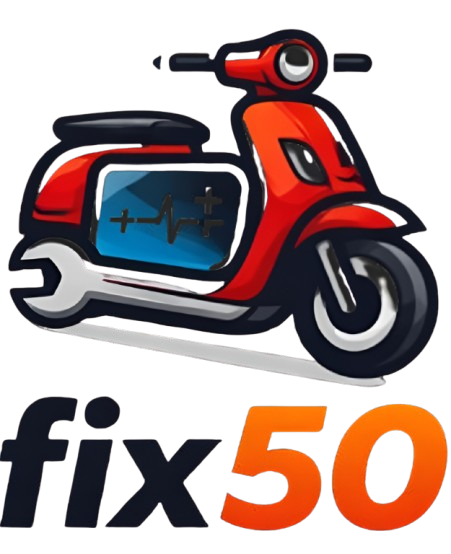

Fix50Fix50 helpt je met slimme diagnose, onderhoudsadvies en het beheren van al je scooters op één plek.
Doorloop een interactieve wizard en ontdek binnen enkele minuten de meest waarschijnlijke oorzaken van jouw scooterprobleem.
Ontvang automatisch onderhoudsadvies op basis van jouw kilometers, rijstijl en scooter‑type.
Beheer eenvoudig al je scooters, kilometerstanden en onderhoudsgegevens in één overzicht.